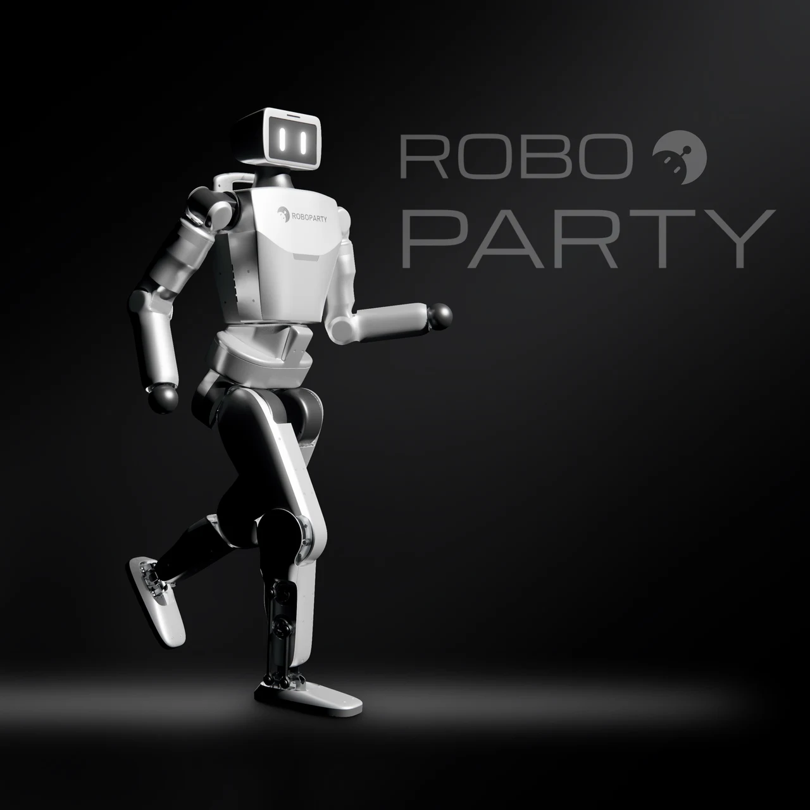
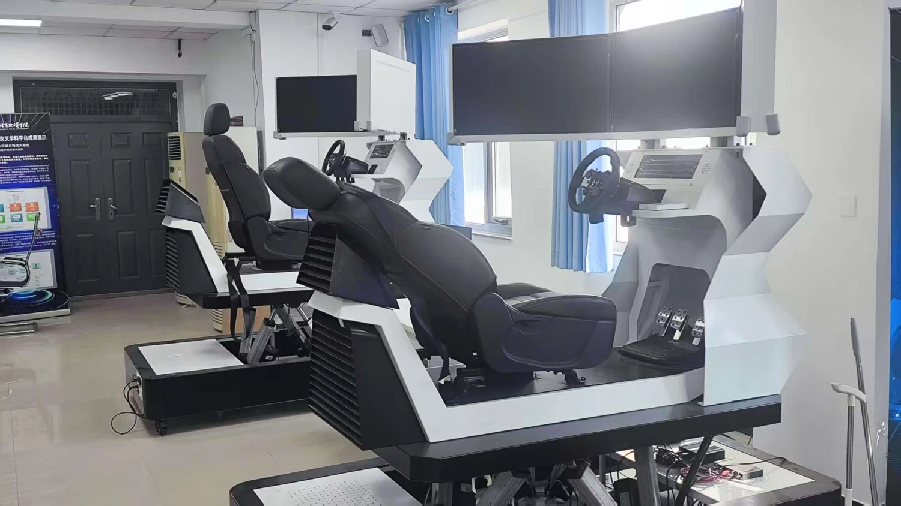
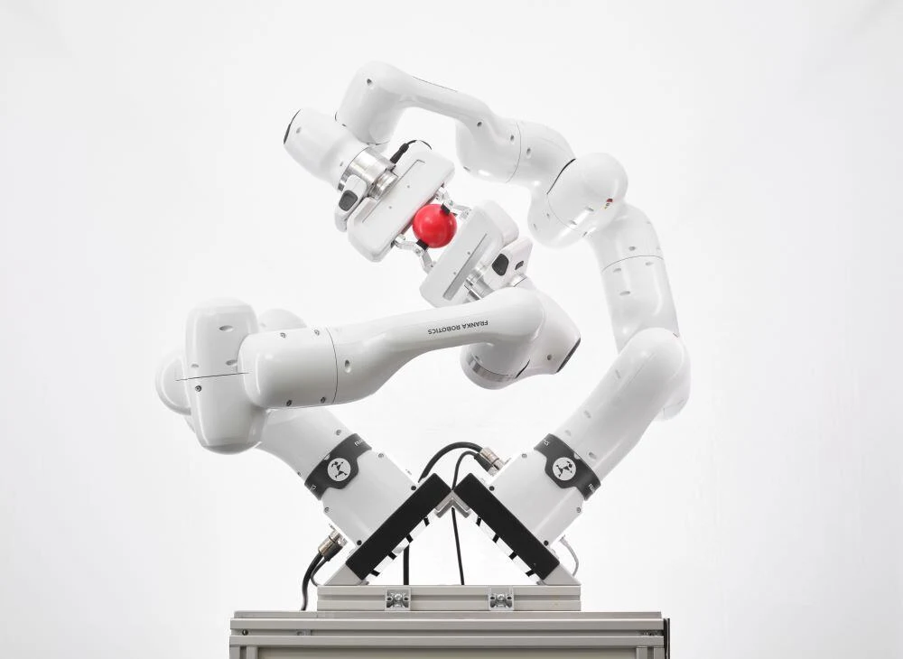
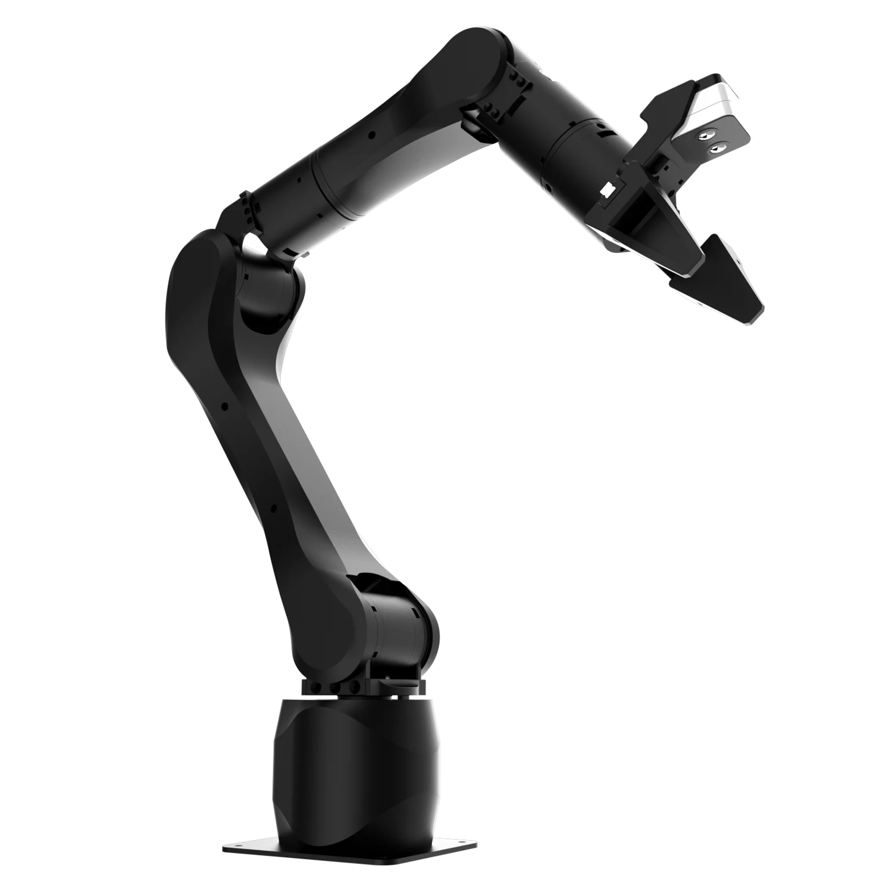
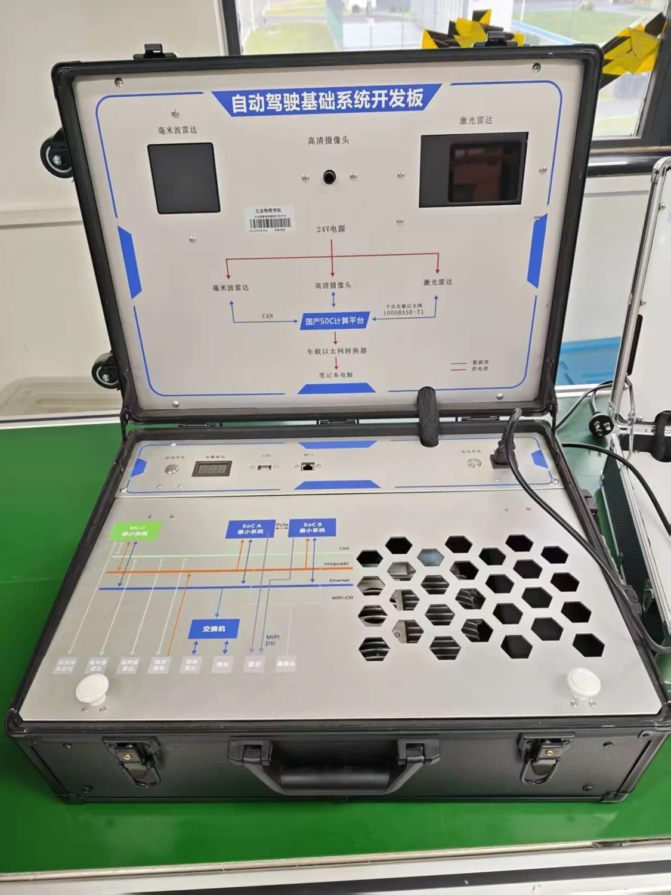

物流系统科学
研究物流系统建模、协同服务与优化方法，关注复杂物流过程中的运行效率和系统协同。
实验室依托北京物资学院建设，面向物流系统中的感知、决策、控制与协同问题开展研究。围绕物流系统科学、大模型驱动的决策优化、智能物流机器人与无人系统、可持续智慧物流系统工程，连接基础方法、实验平台与行业应用。



研究物流系统建模、协同服务与优化方法，关注复杂物流过程中的运行效率和系统协同。
面向物流与交通任务，探索大模型、多模态学习与优化决策方法的结合。
围绕机器人操作、多传感器融合导航、多机协同与空地配送开展研究和实验验证。
面向仓储、运输与末端配送，研究系统集成、运行评估与可持续物流应用。
具身智能、智能驾驶、人因工程与无人系统
用于人形机器人运动控制、强化学习训练与仿真到实机部署研究。

具身智能主从遥操作采集双相机数据，在同一平台上开展 ACT、SmolVLA 与 π0 的学习和复现实验。

智能驾驶集成毫米波雷达、激光雷达、摄像头与国产 SoC 计算平台，支持感知数据接入和系统开发。
两台驾驶模拟器，配合 51Sim 软件开展驾驶行为、人机共驾及仿真场景实验。